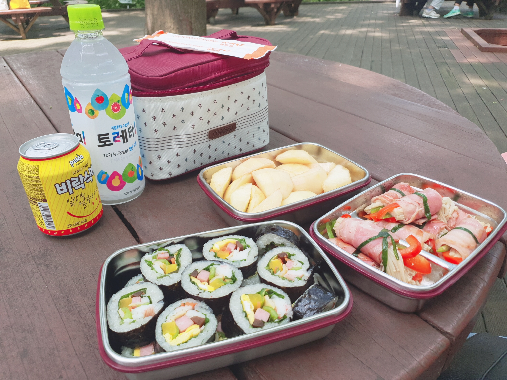
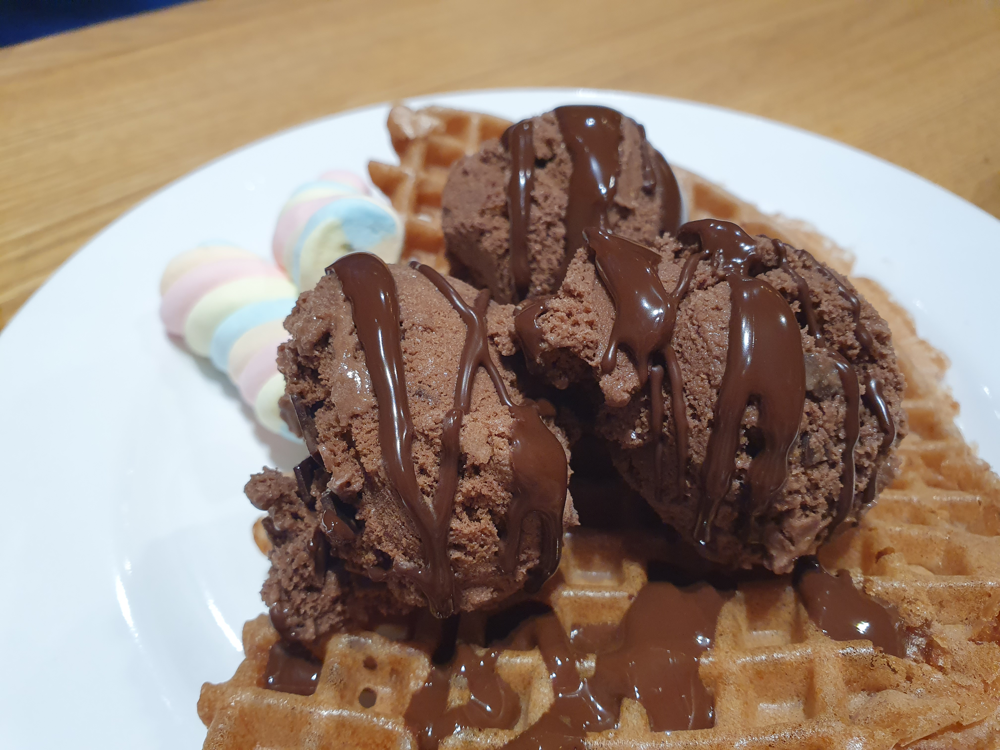
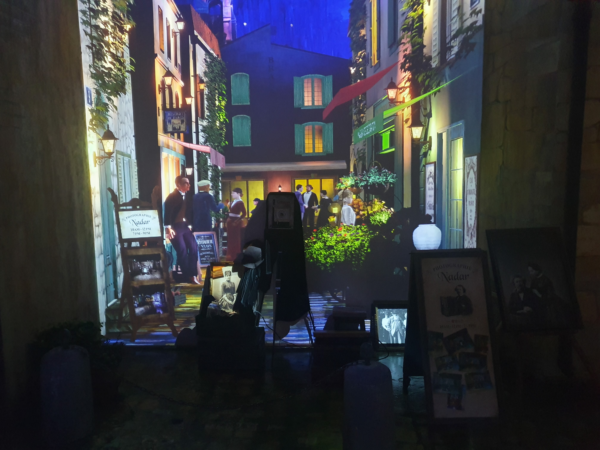
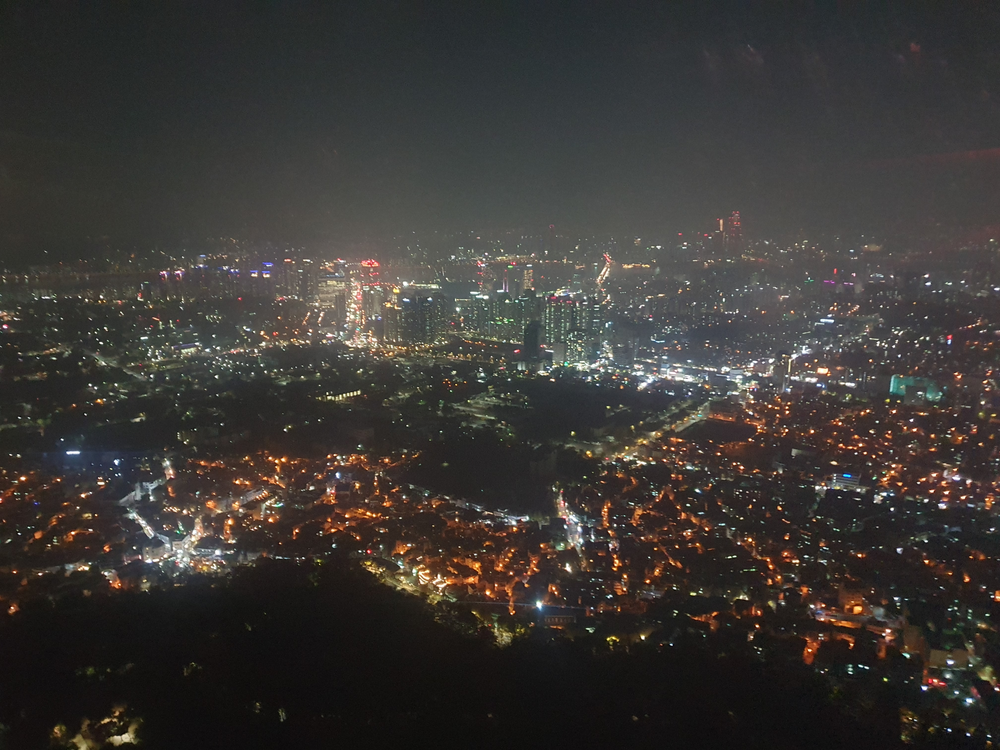

Bring Back Our Memories
추억의 장소🎈
-

2020년 7월 16일오산시물향기 수목원😉물향기 수목원에서 내가 싸 온 김밥이랑 팽이버섯 베이컨 말이를 먹었다. 양이 좀 적었다. 나는 배고팠지만 배부르다고 거짓말을 치고 오빠에게 베이컨 말이를 양보했다.
-

2019년 12월 8일천안천안터미널 애슐리생일 기념으로 애슐리에 갔다. 오빠는 그 당시 나한테 학교를 자퇴할 거라고 했다. 그래서 나는 슬퍼서 디저트를 먹으면서 눈물을 뚝뚝 흘렸다. 다행히 오빠는 계속 학교에 다닌다.
-
 2020년 9월 17일의왕시의왕 레일바이크같이 레일바이크를 타는게 내 로망이여서 같이 의왕 레일바이크를 타러 갔다. 근데 레일바이크가 생각보다 엄청 힘들었다. 그래서 당분간은 레일바이크를 타고 싶지 않다.
2020년 9월 17일의왕시의왕 레일바이크같이 레일바이크를 타는게 내 로망이여서 같이 의왕 레일바이크를 타러 갔다. 근데 레일바이크가 생각보다 엄청 힘들었다. 그래서 당분간은 레일바이크를 타고 싶지 않다. -
 2020년 4월 9일동탄동탄 벚꽃 구경코로나로 인해 벚꽃을 보러 가기 어려웠다. 대신 우리집 주변에 벚꽃이 예쁘게 펴서 집 앞을 산책하면서 벚꽃 구경을 했다. 저날 오빠가 나를 업어줬는데 표정이 힘들어보인다.
2020년 4월 9일동탄동탄 벚꽃 구경코로나로 인해 벚꽃을 보러 가기 어려웠다. 대신 우리집 주변에 벚꽃이 예쁘게 펴서 집 앞을 산책하면서 벚꽃 구경을 했다. 저날 오빠가 나를 업어줬는데 표정이 힘들어보인다. -
 2020년 8월 15일안양안양 소마드로잉카페🎨안양역 주변에 있는 드로잉 카페에 갔다. 앞치마랑 팔 토시를 하니까 마치 미대생이 된 것 같았다. 다음에 또 가고 싶다.
2020년 8월 15일안양안양 소마드로잉카페🎨안양역 주변에 있는 드로잉 카페에 갔다. 앞치마랑 팔 토시를 하니까 마치 미대생이 된 것 같았다. 다음에 또 가고 싶다. -

2020년 1월 10일동대문라뜰리에 전시회첫째 언니가 전시회 할인 쿠폰을 줘서 오빠랑 전시회를 보러 갔다. 가서 고흐의 일생에 대한 연극도 봤는데 배우가 1명이었다. 좀 안쓰러웠다. 빛과 관련된 전시여서 사진 찍기에 너무 예쁘고 좋았다.
-

2020년 11월 17일용산서울 타워남산 타워인 줄 알았는데 이름이 서울 타워로 바뀌었다고 한다. 남산 케이블카를 타고 올라갔는데 사람이 좀 많아서 자리를 창가쪽으로 빠르게 선점하는게 중요했다.